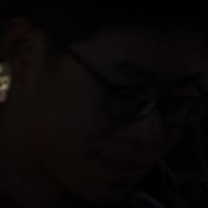
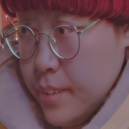
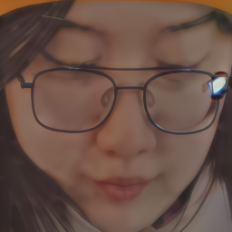
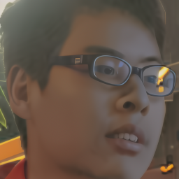
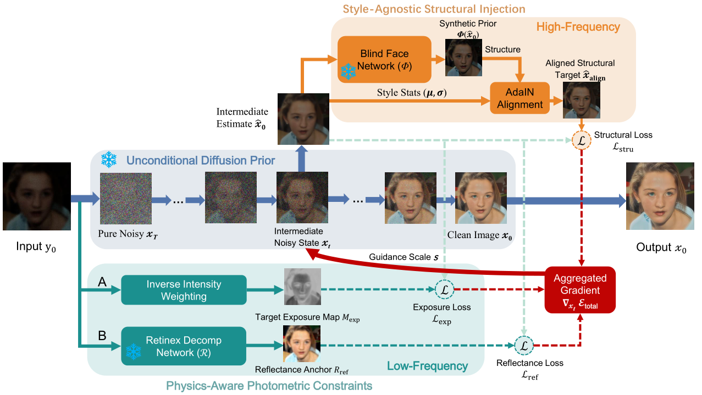
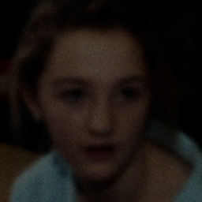
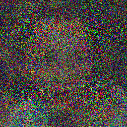
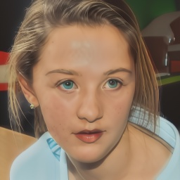
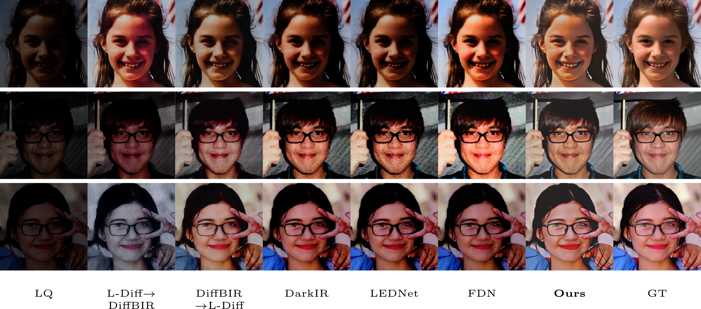
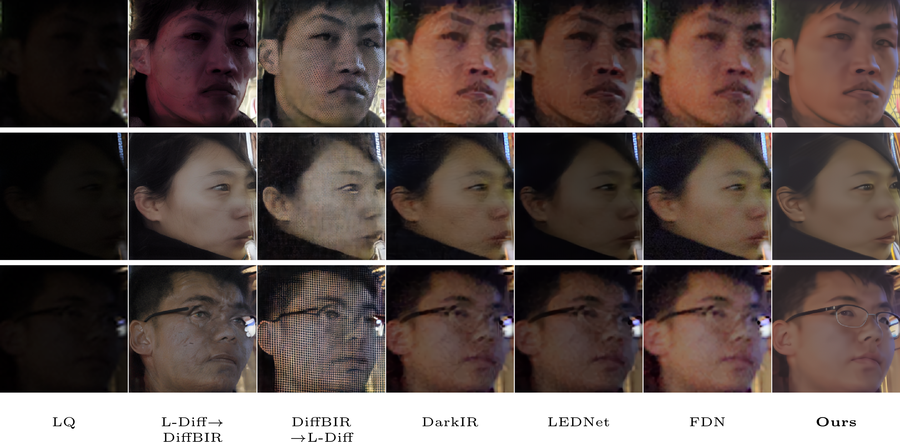

PASDiff: Physics-Aware Semantic Guidance for
Joint Real-World Low-Light Face Enhancement and Restoration




Materials
Abstract
Real-world low-light faces suffer from coupled illumination, noise, and blur degradations. We propose PASDiff, a training-free diffusion framework that jointly enhances visibility and restores facial details. Physics-aware exposure and reflectance constraints recover natural illumination and color, while Style-Agnostic Structural Injection introduces identity-relevant structure without inheriting the lighting bias of external face priors. PASDiff achieves a strong balance among perceptual quality, color fidelity, and identity consistency on synthetic and real-world data.
Method

Process of Our PASDiff



Results


Citation
If you find our paper or data useful for your research, please consider citing our work:
@inproceedings{ni2026pasdiff,
title={PASDiff: Physics-Aware Semantic Guidance for Joint Real-world Low-Light Face Enhancement and Restoration},
author={Ni, Yilin and Li, Wenjie and Wang, Zhengxue and Li, Juncheng and Gao, Guangwei and Yang, Jian},
booktitle={ECCV},
year={2026}
}Contact
If you have any questions, please feel free to reach me out at lewj2408@gmail.com or nixiaolin26@gmail.com.